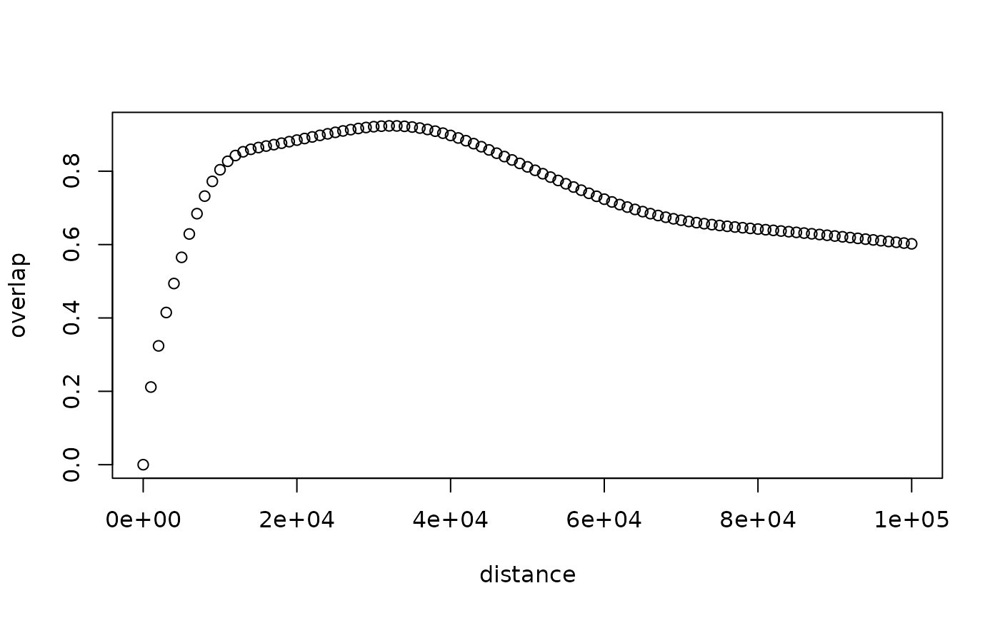

Calculate overlap between a vertical profile ('vp') and the vertical radiation profile emitted by the radar
Source:R/beam.R
beam_profile_overlap.RdCalculates the distribution overlap between a vertical profile ('vp') and the vertical radiation profile of a set of emitted radar beams at various elevation angles as given by beam_profile.
Usage
beam_profile_overlap(
vp,
elev,
distance,
antenna,
zlim = c(0, 4000),
noise_floor = -Inf,
noise_floor_ref_range = 1,
steps = 500,
quantity = "dens",
normalize = TRUE,
beam_angle = 1,
k = 4/3,
lat,
re = 6378,
rp = 6357
)Arguments
- vp
A
vpobject.- elev
Numeric vector. Beam elevation(s), in degrees.
- distance
Numeric. The distance(s) from the radar along sea level (down range) for which to calculate the overlap, in m.
- antenna
Numeric. Radar antenna height, in m. Default to antenna height in
vp.- zlim
Numeric vector of length two. Altitude range, in m
- noise_floor
Numeric. The system noise floor in dBZ. The total system noise expressed as the reflectivity factor it would represent at a distance
noise_floor_ref_rangefrom the radar. NOT YET IMPLEMENTED- noise_floor_ref_range
Numeric. The reference distance from the radar at which
noise_flooris expressed. NOT YET IMPLEMENTED.- steps
Numeric. Number of integration steps over altitude range
zlim, defining altitude grid size used for numeric integration.- quantity
Character. Profile quantity (
densoreta) to use for the altitude distribution.- normalize
Logical. If
TRUE, normalize the radiation coverage pattern over the altitude range specified byzlim.- beam_angle
Numeric. Beam opening angle in degrees, typically the angle between the half-power (-3 dB) points of the main lobe.
- k
Numeric. Standard refraction coefficient.
- lat
Numeric. Radar latitude. Defaults to latitude in
vp.- re
Numeric. Earth equatorial radius, in km.
- rp
Numeric. Earth polar radius, in km.
Details
This function also calculates the overlap quantity in the output of
integrate_to_ppi.
Overlap is calculated as the Bhattacharyya coefficient (i.e.
distribution overlap) between the (normalized) vertical profile (vp) and
the (normalized) radiation coverage pattern as calculated by
beam_profile(). In the calculation of this overlap metric, NA and NaN
values in the profile quantity specified by quantity are replaced with
zeros.
The current implementation does not (yet) take into account the system noise floor when calculating the overlap.
In the ODIM data model the attribute /how/NEZ or /how/NEZH specifies the
system noise floor (the Noise Equivalent Z or noise equivalent reflectivity
factor. the H refers to the horizontal channel of a dual-polarization radar).
In addition, the attribute /how/LOG gives "security distance above mean
noise level (dB) threshold value". This is equivalent to the log receiver
signal-to-noise ratio, i.e. the dB above the noise floor for the signal
processor to report a valid reflectivity value. We recommend using NEZH + LOG for noise_floor, as this is the effective noise floor of the system
below which no data will be reported by the radar signal processor.
Typical values are NEZH = -45 to -50 dBZ at 1 km from the radar. LOG is
typically around 1 dB.
Need to evaluate beam by beam the returned signal relative to a uniform beam
filling of at least NEZH + LOG If returned signal is lower, the gate is
below noise level.
See also
Other beam_functions:
beam_distance(),
beam_height(),
beam_profile(),
beam_range(),
beam_width(),
gaussian_beam_profile()
Examples
# Read the polar volume example file
pvolfile <- system.file("extdata", "volume.h5", package = "bioRad")
# Read the corresponding vertical profile example
pvol <- read_pvolfile(pvolfile)
# let us use this example vertical profile:
data(example_vp)
example_vp
#> Vertical profile (class vp)
#>
#> radar: seang
#> source: WMO:02606,RAD:SE50,PLC:Ängelholm,NOD:seang,ORG:82,CTY:643,CMT:Swedish radar
#> nominal time: 2015-10-18 18:00:00
#> generated by: vol2bird 0.3.17
# Calculate overlap between vertical profile of birds and the vertical
# radiation profile emitted by the radar
bpo <- beam_profile_overlap(
example_vp,
get_elevation_angles(pvol), seq(0, 100000, 1000)
)
# Plot the calculated overlap:
plot(bpo)
